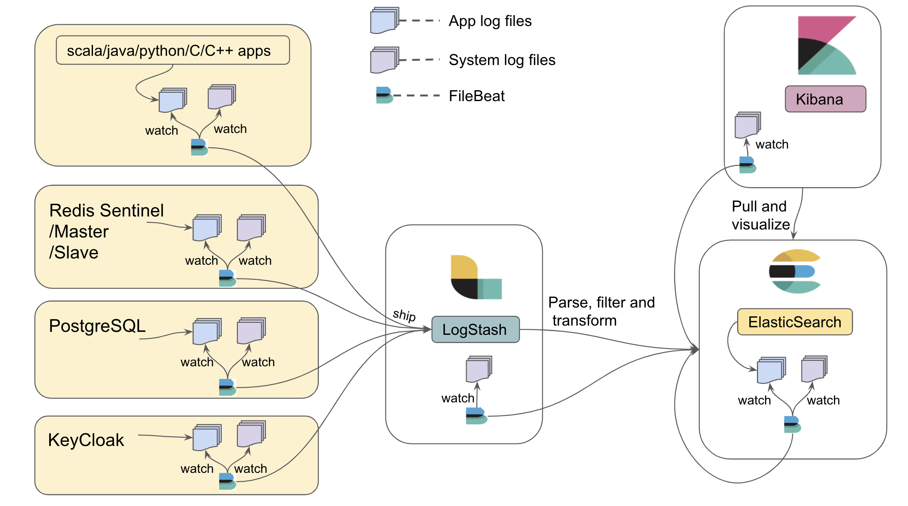

Logging Aggregator
The logging aggregator provides aggregation of logs generated from TMT applications written in Scala, Java, Python, C, C++, modules like System logs, Redis logs, Postgres logs, ElasticSearch logs, Keycloak logs using the Elastic stack(Elasticsearch, Logstash, Kibana) and Filebeat.
Elastic license
It is recommended to use the basic/elastic license of Elastic stack, which is a free license. To know more about what features are available in basic license refer this link.
Architecture

As shown in above architecture diagram, all machines in TMT can run Filebeat to watch log files. Filebeat is responsible for watching log files and shipping it to the centralized Logstash component. Filebeat maintains a marker in a registry for the last read position in a file, so that it can resume where it left off should it need to be restarted. Applications can keep emitting logs to the file agnostic to whether Filebeat is running or not.
Logstash collects the JSON logs (e.g. from components) in string format, parses it to a valid JSON object and then feeds it to Elasticsearch. Elasticsearch is responsible for ingesting and indexing the JSON data. If logs are generated in non-JSON format, which will be the case for Redis, syslog, Postgres, and Elasticsearch logs, they will be parsed and indexed using the elastic modules.
After the JSON data is indexed in Elasticearch, Kibana provides powerful visualization tools and dashboards that offer various interactive diagrams to visualize complex queries.
All the files required for logging aggregator configuration can be found here. How to use each of these files and its significance will be explained further in the document.
It is assumed that in production, Elasticsearch, Logstash and Kibana will be registered with TMT intranet DNS setup. Hence, all the configuration files for production are provided by referring to DNS host name.
It is strongly recommended to run the same version (v6.6.0 or higher) of elastic components so as to avoid any compatibility issues.
By default, the elastic stack exposes the following ports on which the configurations rely.
- 5044: Logstash TCP input.
- 9200: Elasticsearch HTTP port
- 5601: Kibana
TMT Applications (Scala/Java/Python/C++/C)
In order to aggregate logs generated from TMT apps, the Filebeat application is used to watch them. The recommended practice is for apps to generate log files at a common place so that Filebeat can find them. This common place is defined by an environment variable TMT_LOG_HOME For e.g. TMT_LOG_HOME = /«user-accessible-space»/tmt/logs.
For convenience during development, you may choose to use /tmp for TMT_LOG_HOME. However, for production, this variable should be set to something more permanent, since all the files in /tmp will be lost on machine reboot.
The upcoming sections will explain how each TMT app can generate log files at TMT_LOG_HOME and how Filebeat can read them:
Scala/Java
For Scala/Java applications to dump logs in a file, it is important that developers enable the FileAppender in application.conf. To know more about how to configure FileAppender please refer the logging documentation. Once, the FileAppender is enabled, the log files will be generated under TMT_LOG_HOME. If TMT_LOG_HOME is not set as an environment variable then a BaseLogPathNotDefined exception will be thrown. For tests, you can hard code a logging directory without setting the TMT_LOG_HOME environment variable by overriding the baseLogPath configuration setting in the logging configuration in your application.conf file.
C++
For C++ developers, it is recommended to use the spdlog library along with spdlog-setup add-on library for logging in files.
The following code snippet will explain how to use spdlog:
- main.cpp
-
using namespace std; // take the path for storing logs from env var, if not set throw exception string setFilePath() { char* path; try { if((path = getenv("TMT_LOG_HOME")) == NULL) throw new exception; } catch(...) { cerr<<"Environment variable(TMT_LOG_HOME) not set."<<endl; } return path; } // set global pattern for all logs and note the json string format for generating logs inline void setGlobalPattern() { spdlog::set_pattern(R"({"timestamp":"%Y-%m-%dT%H:%M:%S.%fZ", "logger":"%n", "@severity":"%l", "file":"%s", "line":"%#", "message":"%v"})", spdlog::pattern_time_type::utc); // time should be in UTC } int main() { string path = setFilePath(); const auto path_arg = fmt::arg("TMT_LOG_HOME",path); spdlog_setup::from_file_with_tag_replacement( "logging_default.toml", path_arg ); auto file_logger = spdlog::get("root"); spdlog::set_default_logger(file_logger); setGlobalPattern(); SPDLOG_INFO("I am INFO level CPP log"); SPDLOG_CRITICAL("I am CRITICAL CPP log"); SPDLOG_DEBUG("I am DEBUG level CPP log {}","message"); SPDLOG_ERROR("I am an ERROR CPP log"); SPDLOG_WARN("I am WARN level CPP log"); SPDLOG_TRACE("I am TRACE level CPP log"); spdlog::drop_all(); } /* Run the following commands on terminal to execute `main.cpp` $ clang++ -std=c++17 main.cpp -o main $ ./main */ - logging_default.toml
-
[[sink]] name = "basic_logger" type = "basic_file_sink_st" # Tagged based configuration. Programmatically determine path. filename = "{TMT_LOG_HOME}/spdlog.log" create_parent_dir = true # Various loggers can be created [[logger]] name = "root" sinks = ["basic_logger"] level = "trace" # More examples of configuration files can be found at https://github.com/guangie88/spdlog_setup/tree/v0.3.0-alpha.2/config
The source code for above code can be found here
Things to keep in mind while writing C++/C/Python apps
- The structure of JSON logs should adhere to this format
- Log files should be generated at path set at TMT_LOG_HOME
- Time should be logged in UTC
- It is recommended to use rotating files for logging
- Configuration of log levels should be in
.tomlfile (or any config file for that matter e.g..conffor C or.jsonfor python) so that log level is changeable without re-compiling C/C++ code.
All the above points are already included for Scala/Java apps using the CSW Logging framework.
C
For C developers, it is recommended to use zlog logging library. The following code snippet will explain how to use zlog:
- main.c
-
int main(int argc, char **argv) { int rc; zlog_category_t* cat; rc = zlog_init("logging_default.conf"); if (rc) { printf("Init failed. Either file name is incorrect or their is syntax error in configuration file.\n"); return -1; } cat = zlog_get_category("my_cat"); zlog_info(cat,"I am Info C Log"); zlog_debug(cat,"I am Debug C Log"); zlog_fatal(cat,"I am Fatal C Log"); zlog_warn(cat,"I am warn C Log"); zlog_error(cat, "I am Error C Log"); zlog_fini(); return 0; } /* Run the following commands on terminal to execute `main.c` $ cc -c -o main.o main.c -I/usr/local/include $ cc -o main main.o -L/usr/local/lib -lzlog $ ./main */ - logging_default.conf
-
[global] # Highly recommended to keep the default format as-is for a meaningful logging aggregation and analysis default format = "{"timestamp" : "%d(%FT%T).%ms%d(%z)", "@severity" : "%V", "file" : "%F", "line" : "%L", "@host" : "%H", "message" : "%m"} %n" [rules] # Relies on environment variable TMT_LOG_HOME to be set otherwise there will be exception # *.* = category.severity For e.g., my_category.error *.* "%E(TMT_LOG_HOME)/zlog.log"
The source code for above code can be found here
Please refer to note above in the C++ section.
Python
For python developers it is recommended to use the default python-logging module that comes with python. The following code snippet will explain how to use python-logging with python 3.7:
- main.py
-
from __future__ import division from __future__ import print_function from __future__ import unicode_literals from __future__ import absolute_import import logging.config import codecs import json import logging.config import os import pathlib import tmt_formatter def main(): logging.basicConfig(level="INFO") logger = logging.getLogger() logger.info("This is the logger configured by `logging.basicConfig()`.") config_file = "logging_default.json" with codecs.open(config_file, "r", encoding="utf-8") as fd: config = json.load(fd) dirPath = os.environ.get("TMT_LOG_HOME") pathlib.Path(dirPath).mkdir(parents=True, exist_ok=True) logPath = dirPath + "/python.log" config["logging"]["handlers"]["file_handler"]["filename"]=logPath logging.config.dictConfig(config["logging"]) # each time we need to log something we can create a logger object # The operation of creating a logger should be quite cheap. # getLogger() without arguments returns the "root" logger. logger = logging.getLogger() logger.info("This is an INFO message on the root logger.") logger.debug("This is an INFO message on the root logger.") # If we need to separate things, we can always create child loggers: child = logging.getLogger().getChild("child") child.warning("This is a WARNING message on the child logger.") # let's create an error. This will send an email child.error("This is an ERROR message.") main() - logging_default.json
-
{ "logging": { "version": 1, "disable_existing_loggers": true, "formatters": { "single-line": { "class": "logging.Formatter", "datefmt": "%I:%M:%S", "format": "%(levelname)-8s; %(asctime)s; %(name)-15s; %(module)s:%(funcName)s;%(lineno)d: %(message)s" }, "verbose": { "class": "tmt_formatter.UTCFormatter", "datefmt": "%Y-%m-%dT%H:%M:%SZ", "format": "{\"@name\":\"%(name)s\", \"@severity\":\"%(levelname)s\", \"message\": \"%(message)s\", \"file\": \"%(filename)s\", \"line\": \"%(lineno)d\", \"process\": \"%(processName)s\", \"class\": \"%(pathname)s\", \"timestamp\": \"%(asctime)s\"}" } }, "handlers": { "console":{ "level": "DEBUG", "class": "logging.StreamHandler", "formatter": "single-line", "stream" : "ext://sys.stdout" }, "file_handler": { "level": "INFO", "class": "logging.handlers.RotatingFileHandler", "formatter": "verbose", "filename": "/tmp/file_handler.log", "mode": "a", "encoding": "utf-8" } }, "loggers": { }, "root": { "handlers": ["console", "file_handler"], "level": "DEBUG" } } } - tmt_formatter.py
-
import logging import time class UTCFormatter(logging.Formatter): converter = time.gmtime
The source code for above code can be found here
The above example shows how tmt_formatter.py in logging_default.json is used to log with UTC timestamps.
Please refer to note above in the C++ section.
Filebeat watching TMT app logs and system generated logs
Once TMT applications generate log files under TMT_LOG_HOME, Filebeat needs to start watching them. In order for Filebeat to be aware of TMT_LOG_HOME, filebeat.yml should be used to start Filebeat.
All machines running TMT applications also need system generated logs to be watched by Filebeat so that it gets shipped to Logstash. This can be achieved by enabling System module in Filebeat and making Elasticsearch aware of receiving system logs (text based logs) to parse and index them.
In order to achieve this follow the below given steps:
- Run Elasticsearch using elasticsearch.yml. Place
elasticsearch.ymlin «Elasticsearch installation folder»/config/ and execute./bin/elasticsearch(on Mac) orbin/elasticsearch(on Linux). - Run LogStash using logstash.conf. Place
logstash.confin «Logstash installation folder»/config/ and execute./bin/logstash -f config/logstash.conf(on mac) orbin/logstash -f config/logstash.conf(on Linux). - Place filebeat.yml in «Filebeat installation folder» and execute filebeat-init.sh from «Filebeat installation folder». This will make Elasticsearch aware of System module.
- Run Filebeat from «Filebeat installation folder» by executing
./filebeat -e(on Mac) orfilebeat -e(on Linux). This will enable system module for watching system logs from its default path i.e. /var/log/system.log as well as watching log files under TMT_LOG_HOME. - Run Kibana using kibana.yml. Place
kibana.ymlin «Kibana installation folder»/config/ and execute./bin/kibana(on mac) orbin/kibana(on Linux). This will give GUI over logs aggregated in Elasticsearch.
It is assumed that in production, Elasticsearch, Logstash and Kibana will be registered with TMT intranet DNS setup. Hence, all the configuration files for production are provided by referring to DNS host name.
Redis logs
In production, Redis will be started in sentinel mode, master mode and slave mode on different machines for Event and Alarm service. Configuration files are provided for Redis sentinel, master and slave to log in file /usr/local/var/log/redis/redis-server.log. Filebeat will also be watching this file once the Redis module is enabled.
Note that system generated logs on Redis machines also needs to be watched by Filebeat and aggregated. In order to enable Redis and System module follow the below given steps:
- Run Elasticsearch using elasticsearch.yml. Place
elasticsearch.ymlin «Elasticsearch installation folder»/config/ and execute./bin/elasticsearch(on Mac) orbin/elasticsearch(on Linux). - Run LogStash using logstash.conf. Place
logstash.confin «Logstash installation folder»/config/ and execute./bin/logstash -f config/logstash.conf(on mac) orbin/logstash -f config/logstash.conf(on Linux). - Place filebeat.yml in «Filebeat installation folder» and execute filebeat-init.sh from «Filebeat installation folder». This will make Elasticsearch aware of Redis and System module.
- Run Filebeat from «Filebeat installation folder» by executing
./filebeat -e(on Mac) orfilebeat -e(on Linux). - Run Kibana using kibana.yml. Place
kibana.ymlin «Kibana installation folder»/config/ and execute./bin/kibana(on mac) orbin/kibana(on Linux). This will give GUI over logs aggregated in Elasticsearch.
Postgres logs
Logs generated by Postgres needs to be watched by Filebeat and aggregated. Hence, use postgres.conf to start the PostgreSQL server which will enable logging in postgres to its default location /usr/local/var/postgres and use UTC time for logging.
Note that system generated logs on Postgres machine also needs to be watched by Filebeat and aggregated. In order to enable Postgres and System module follow the below given steps:
- Run Elasticsearch using elasticsearch.yml. Place
elasticsearch.ymlin «Elasticsearch installation folder»/config/ and execute./bin/elasticsearch(on Mac) orbin/elasticsearch(on Linux). - Run LogStash using logstash.conf. Place
logstash.confin «Logstash installation folder»/config/ and execute./bin/logstash -f config/logstash.conf(on mac) orbin/logstash -f config/logstash.conf(on Linux). - Place filebeat.yml in «Filebeat installation folder» and execute filebeat-init.sh from «Filebeat installation folder». This will make Elasticsearch aware of Postgres and System module.
- Run Filebeat from «Filebeat installation folder» by executing
./filebeat -e(on Mac) orfilebeat -e(on Linux). - Run Kibana using kibana.yml. Place
kibana.ymlin «Kibana installation folder»/config/ and execute./bin/kibana(on mac) orbin/kibana(on Linux). This will give GUI over logs aggregated in Elasticsearch.
Elasticsearch logs
It is important to also aggregate logs generated by Elasticsearch. There can be situations where indexing generates error and it will be useful to have those errors aggregated and viewed in Kibana. Hence, use elaticsearch.yml to start Elasticsearch which will configure log file location under TMT_LOG_HOME.
Note that system generated logs on Elasticsearch machine also needs to be watched by Filebeat and aggregated. In order to enable Elasticsearch and System module follow the below given steps:
- Run Elasticsearch using elasticsearch.yml. Place
elasticsearch.ymlin «Elasticsearch installation folder»/config/ and execute./bin/elasticsearch(on Mac) orbin/elasticsearch(on Linux). - Run LogStash using logstash.conf. Place
logstash.confin «Logstash installation folder»/config/ and execute./bin/logstash -f config/logstash.conf(on mac) orbin/logstash -f config/logstash.conf(on Linux). - Place filebeat.yml in «Filebeat installation folder» and execute filebeat-init.sh from «Filebeat installation folder». This will make Elasticsearch aware of it’s own module and System module.
- Run Filebeat from «Filebeat installation folder» by executing
./filebeat -e(on Mac) orfilebeat -e(on Linux). This will enable elasticsearch and system module. - Run Kibana using kibana.yml. Place
kibana.ymlin «Kibana installation folder»/config/ and execute./bin/kibana(on mac) orbin/kibana(on Linux). This will give GUI over logs aggregated in Elasticsearch.
Keycloak logs
Logs generated from Keycloak needs to be watched by Filebeat and aggregated. Hence, use standalone.xml to start JBoss server which will make JBoss server to log in JSON format, enable keycloak logs, and generate log files under TMT_LOG_HOME.
Note that system generated logs on Keycloak machine also needs to be watched by Filebeat and aggregated. In order to watch Keycloak logs from TMT_LOG_HOME and enable system module refer the steps from here.
System logs on Logstash and Kibana machines
Machines running Logstash and Kibana will require to aggregate system logs from their machines too. Hence, in order to enable system module on their machines follow the below given steps:
- Run Elasticsearch using elasticsearch.yml. Place
elasticsearch.ymlin «Elasticsearch installation folder»/config/ and execute./bin/elasticsearch(on Mac) orbin/elasticsearch(on Linux). - Go to «Filebeat installation folder» place Logstash/filebeat.yml and execute Logstash/filebeat-init.sh or place Kibana/filebeat.yml and execute Kibana/filebeat-init.sh from Logstash or Kibana machines respectively. This will make Elasticsearch aware of System module.
- Run Filebeat from «Filebeat installation folder» by executing
./filebeat -e(on Mac) orfilebeat -e(on Linux). - Run LogStash using logstash.conf. Place
logstash.confin «Logstash installation folder»/config/ and execute./bin/logstash -f config/logstash.conf(on mac) orbin/logstash -f config/logstash.conf(on Linux). - Run Kibana using kibana.yml. Place
kibana.ymlin «Kibana installation folder»/config/ and execute./bin/kibana(on mac) orbin/kibana(on Linux). This will give GUI over logs aggregated in Elasticsearch.
Explore Kibana
Once Kibana is up and running, open http://localhost:5601/ in a browser and go to:
Management->Kibana->Index Patternsand create an index pattern as per the requirement.Discover->Select the index pattern createdand explore
For Modules like System, Postgres, Redis and Elasticsearch go to Dashboard and explore.
Running Elastic stack for developer
For development purposes Docker compose is used to start Elasticsearch, Logstash, Kibana and Filebeat in a container. Hence, make sure that latest Docker setup is installed and running before starting the Elastic stack. The Docker container is responsible for aggregating logs generated in tmp/csw/logs. Hence, developers writing Scala/Java/Python/C++/C applications need to generate log files under /tmp/csw/logs.
Also, note that csw apps started via csw-services.sh will generate log files under /tmp/csw/logs and thus, it will be aggregated by the Elastic docker container. To know more about setting up docker and starting Elastic please refer Starting Elastic logging aggregator for Development.